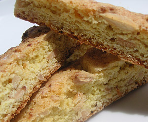

Biscotti
5 von 6Preheat oven to 180 degrees. Toast 1 cup of almonds in the oven until lightly golden; coarsely chop and set aside. Mix 2 cups of flour, 1 cup of sugar, 1 envelope baking powder, and a pinch of salt in a large bowl. Add 2 eggs and 2 egg yolks, and spice as you like (cinnamon, nutmeg, almond extract, etc). On lightly floured surface, pat dough into a 20 by 20 cm log. Cut into strips 3 cm thick and bake for 30 minutes. Remove from oven, and reduce oven temperature to 100 degrees. When cooled, slice strips to desired length and width. Bake an additional 10 minutes.
